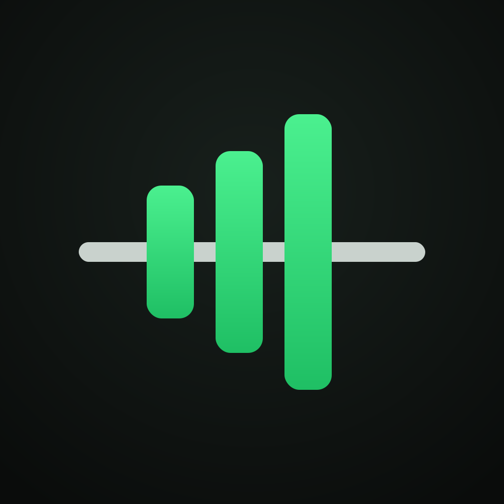

OVRLDHelp & support
Strength training with progressive overload and a weekly plan that adapts to how training is going.
Need help or found a bug? Open an issue on GitHub. Please include your phone model, iOS or Android version, and what you were doing.
Common questions
Where is my data stored?
Only on your phone. There is no account or cloud sync. See the privacy policy.
How do I move to a new phone?
On the old phone: Settings → Export backup (JSON), and save the file somewhere you can reach from the new phone (for example Files or a cloud drive). On the new phone: install OVRLD, then Settings → Restore from backup.
How does the app choose my weights?
Each exercise follows its program's progression rule (linear, double progression or RPE-based). Every target shows a short reason. At the end of each week, the week review suggests pushing, holding, going lighter or deloading, and you choose whether to accept it.
The rest timer didn't alert me with the phone locked.
Allow notifications for OVRLD in your phone's Settings. The alert is a local notification, and Focus or silent mode can mute it.
Does it work with Apple Health?
Yes, on iPhone. Turn on Settings → Apple Health → Save finished workouts, and each workout is saved to Health as strength training. OVRLD doesn't read your Health data.
How do I get the rest timer on my lock screen?
It appears automatically when you start resting. If it doesn't, check iPhone Settings → OVRLD → Live Activities is on.
Can I connect my Oura ring?
Not yet. Wearable sync is planned for a later version.